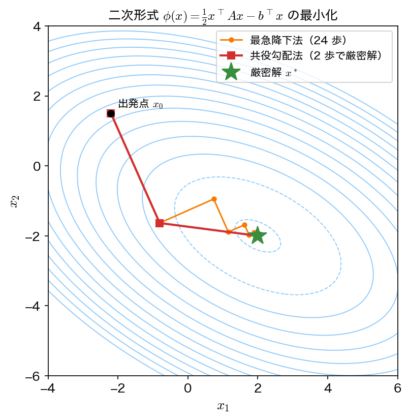
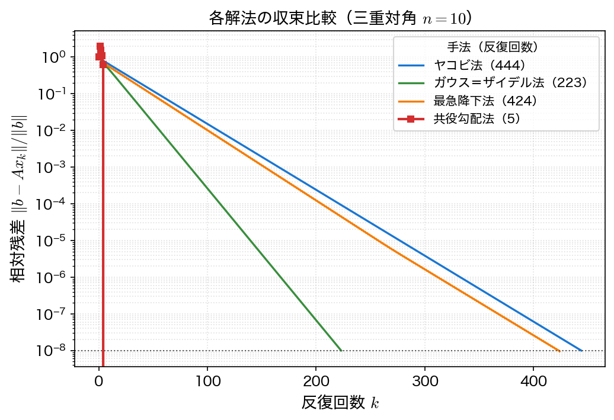

共役勾配法
共役勾配法（conjugate gradient method, CG）は、対称正定値（SPD）な疎行列に対する事実上の標準解法である。定常反復法より圧倒的に速く収束し、行列ベクトル積さえできれば実装できるため、大規模問題で広く使われる。本ページでは「連立1次方程式を解く」問題を「2次関数を最小化する」問題に読み替えるところから出発し、最急降下法の弱点を経て CG にたどり着く。
2次形式の最小化との等価性
\(A\) が対称正定値のとき、次の2次形式（quadratic form）を考える。
その勾配は \(\nabla\phi(\mathbf{x}) = A\mathbf{x} - \mathbf{b}\) である。\(A\) が正定値なので \(\phi\) は下に凸な「お椀型」であり、唯一の最小点で勾配がゼロ、すなわち
となる。つまり \(A\mathbf{x} = \mathbf{b}\) を解くことは \(\phi(\mathbf{x})\) を最小化することと等価である。残差 \(\mathbf{r} = \mathbf{b} - A\mathbf{x} = -\nabla\phi\) は、\(\phi\) を最も急に減らす方向（最急降下方向）に一致する。
最急降下法とそのジグザグ
最も素朴な最小化は、各反復で残差（最急降下）方向に進む最急降下法（steepest descent）である。\(\mathbf{x}_{k+1} = \mathbf{x}_k + \alpha_k \mathbf{r}_k\) と更新するとき、歩幅 \(\alpha_k\) は方向 \(\mathbf{r}_k\) に沿って \(\phi\) を最小にするようにとる。
この歩幅は解析的に求まる。\(\mathbf{x}_k\) から \(\mathbf{r}_k\) 方向に \(\alpha\) だけ進んだ先の \(\phi\) は、\(A\) の対称性と \(A\mathbf{x}_k - \mathbf{b} = -\mathbf{r}_k\) を使うと
という \(\alpha\) の2次関数になる。\(A\) が正定値なので \(\mathbf{r}_k^{\top} A \mathbf{r}_k > 0\)、すなわち下に凸であり、最小値は
で一意に定まる。1変数の2次関数の最小化なので、線形探索を反復する必要がない。
しかしこの方法は、等高線が細長い（＝\(A\) が悪条件な）場合に、谷を直角に折れながらジグザグに進むため非常に遅い。連続する探索方向が直交してしまい、すでに最小化したはずの方向の成分を次のステップで再び悪化させてしまうのが原因である。

A-共役な方向
ジグザグの原因は、探索方向が互いに「干渉」することにある。そこで、方向ベクトルの組 \(\{\mathbf{p}_0, \mathbf{p}_1, \dots\}\) を、ふつうの直交ではなく \(A\)-共役（\(A\)-conjugate）、すなわち
を満たすように選ぶ。\(A\) が正定値なので \(\langle \mathbf{u}, \mathbf{v}\rangle_A = \mathbf{u}^{\top} A \mathbf{v}\) は内積の条件を満たす。この \(A\)-内積で測れば、\(A\)-共役とはふつうの直交をそのまま読み替えたものである。\(A\)-共役な方向に沿って順に厳密な1次元最小化を行うと、一度最小化した方向の成分は二度と悪化しない。したがって \(n\) 個の \(A\)-共役方向で最小化すれば、\(n\) 次元空間の最小点にちょうど \(n\) ステップで到達する。
共役勾配法の巧妙な点は、\(A\)-共役な方向の組をあらかじめ全部用意するのではなく、残差から1本ずつ漸化式で生成するところにある。新しい方向 \(\mathbf{p}_{k+1}\) は、現在の残差 \(\mathbf{r}_{k+1}\) に直前の方向 \(\mathbf{p}_k\) を \(\beta_k\) だけ混ぜて作る。
CG アルゴリズム
1反復あたり行列ベクトル積 \(A\mathbf{p}_k\) が1回、内積が2回だけである。行列 \(A\) を変形しないので fill-in は起こらず、疎行列をそのまま使える。
収束性
- 有限終了性: 丸め誤差がなければ、CG は高々 \(n\) 回の反復で厳密解に到達する（\(A\)-共役方向が \(n\) 本で空間を張り尽くすため）。
- 実用的な収束: 実際には \(n\) 回を待たずに十分小さな残差に達することが多い。収束の速さは \(A\) の条件数（condition number） \(\kappa = \lambda_{\max}/\lambda_{\min}\) で決まり、誤差は \(A\)-ノルムで
のように減衰する。\(\sqrt{\kappa}\) に依存する点が重要で、定常反復法（\(\kappa\) に依存）より格段に速い。
残差は単調に減るとは限らない
CG が各反復で最小化するのは2-ノルム残差 \(\|\mathbf{r}_k\|_2\) ではなく \(A\)-ノルム誤差 \(\|\mathbf{x}_k - \mathbf{x}^*\|_A\) である。そのため 2-ノルム残差は途中で増えることがある（下のサンプルでも \(k=1\) で一旦増える）。最終的に厳密解で残差はゼロになる。
前処理つき共役勾配法（PCG）
CG の収束は条件数 \(\kappa\) に支配されるので、\(\kappa\) を小さくできれば加速できる。そこで、\(A\) に近く逆行列が安価に求まる前処理行列（preconditioner） \(M \approx A\) を用い、\(M^{-1}A\) の条件数が \(1\) に近くなるように変換してから CG を適用する。これを前処理つき共役勾配法（preconditioned CG, PCG）と呼ぶ。
最も簡単な前処理は \(M = \mathrm{diag}(A)\)（対角部分）をとるヤコビ前処理（対角スケーリング）である。より強力なものに不完全コレスキー分解（IC）などがあり、実問題では前処理の良し悪しが計算時間を決定づける。大規模 SPD 系を解くときは「CG ＋ 良い前処理」が定石である。
サンプルコード
共通の例題である三重対角 SPD 系（\(n = 10\)）を CG で解く。各反復の相対残差 \(\|\mathbf{r}_k\| / \|\mathbf{b}\|\) を表示し、厳密解との誤差を確認する。
#include <stdio.h>
#include <math.h>
#define N 10
void build(double A[N][N], double b[N])
{
int i, j;
for (i = 0; i < N; i++) {
for (j = 0; j < N; j++) A[i][j] = 0.0;
b[i] = 1.0;
A[i][i] = 2.0;
if (i > 0) A[i][i - 1] = -1.0;
if (i < N - 1) A[i][i + 1] = -1.0;
}
}
/* 行列ベクトル積 y = A x */
void matvec(double A[N][N], double x[N], double y[N])
{
int i, j;
for (i = 0; i < N; i++) {
y[i] = 0.0;
for (j = 0; j < N; j++) y[i] += A[i][j] * x[j];
}
}
double dot(double a[N], double b[N])
{
int i; double s = 0.0;
for (i = 0; i < N; i++) s += a[i] * b[i];
return s;
}
int main(void)
{
double A[N][N], b[N], x[N], r[N], p[N], Ap[N];
double tol = 1.0e-8;
int i, k;
FILE *fp; /* 作図用データの出力先 */
build(A, b);
fp = fopen("cg.dat", "w");
if (fp == NULL) { perror("cg.dat"); return 1; }
/* 初期値 x0 = 0, r0 = b - A x0 = b, p0 = r0 */
for (i = 0; i < N; i++) { x[i] = 0.0; r[i] = b[i]; p[i] = b[i]; }
double rs = dot(r, r); /* rs = r^T r */
double bnorm = sqrt(dot(b, b));
printf(" k 相対残差\n");
printf("%2d %.3e\n", 0, sqrt(rs) / bnorm);
fprintf(fp, "%d %.10e\n", 0, sqrt(rs) / bnorm);
for (k = 1; k <= N; k++) {
matvec(A, p, Ap);
double alpha = rs / dot(p, Ap);
for (i = 0; i < N; i++) {
x[i] += alpha * p[i];
r[i] -= alpha * Ap[i];
}
double rs_new = dot(r, r);
printf("%2d %.3e\n", k, sqrt(rs_new) / bnorm);
fprintf(fp, "%d %.10e\n", k, sqrt(rs_new) / bnorm);
if (sqrt(rs_new) / bnorm < tol) { k++; break; }
double beta = rs_new / rs;
for (i = 0; i < N; i++) p[i] = r[i] + beta * p[i];
rs = rs_new;
}
double emax = 0.0;
for (i = 0; i < N; i++) {
double xe = (i + 1) * (N - i) / 2.0;
double e = fabs(x[i] - xe);
if (e > emax) emax = e;
}
fclose(fp);
printf("\n収束: %d 反復, 最大誤差 = %.3e\n", k - 1, emax);
return 0;
}
コンパイルと実行：
実行結果
k 相対残差
0 1.000e+00
1 2.000e+00
2 1.549e+00
3 1.095e+00
4 6.325e-01
5 6.329e-17
収束: 5 反復, 最大誤差 = 0.000e+00
\(n = 10\) の系がわずか 5 反復で厳密解（最大誤差 \(0\)）に達している。ヤコビ法の 444 反復、ガウス＝ザイデル法の 223 反復と比べて桁違いに速い。残差が \(k=1\) で一旦増えたあと \(k=5\) で一気にゼロに落ちている点も、CG が 2-ノルム残差ではなく \(A\)-ノルム誤差を最小化していることの現れである。
なお厳密には CG は高々 \(n=10\) 反復で収束するはずだが、この問題では右辺 \(\mathbf{b}\) が \(A\) の少数の固有ベクトルしか含まないため、半分の反復で済んでいる。
4手法の比較
同じ三重対角 SPD 系（\(n = 10\)）を4手法で解いたときの収束の様子を比較する。

| 手法 | 反復回数（\(n=10\)） | 1反復の主な計算 | 必要な仮定 |
|---|---|---|---|
| ヤコビ法 | 444 | 行列ベクトル積 ×1 | 収束条件（対角優位など） |
| ガウス＝ザイデル法 | 223 | 前進掃引 ×1 | 収束条件（対角優位など） |
| 最急降下法 | 424 | 行列ベクトル積 ×1 | 対称正定値 |
| 共役勾配法 | 5 | 行列ベクトル積 ×1 | 対称正定値 |
CG は定常反復法と同じく「行列ベクトル積1回」が主計算でありながら、反復回数が劇的に少ない。\(n\) を大きくするとこの差はさらに広がる（演習1で確認する）。
可視化
cg.c は表を標準出力に出すのと同時に、同じ値を cg.dat にも書き出す（1列目が反復回数 \(k\)、2列目が相対残差）。定常反復法のページの iterative.c も同じ問題の jacobi.dat・gauss_seidel.dat を作るので、3つを並べれば上の比較図のうち最急降下法を除く3本が描ける（最急降下法は本ページではコードを与えていない）。
import numpy as np
import matplotlib.pyplot as plt
cg = np.loadtxt("cg.dat")
jac = np.loadtxt("jacobi.dat")
gs = np.loadtxt("gauss_seidel.dat")
fig, ax = plt.subplots(figsize=(6.5, 4.5))
ax.semilogy(jac[:, 0], jac[:, 1], label="Jacobi")
ax.semilogy(gs[:, 0], gs[:, 1], label="Gauss-Seidel")
ax.semilogy(cg[:, 0], np.maximum(cg[:, 1], 1e-18), "o-", ms=5, label="CG")
ax.set_xlabel("iteration $k$")
ax.set_ylabel("relative residual")
ax.set_title("CG reaches the exact solution in $n$ steps")
ax.grid(alpha=0.3)
ax.legend()
fig.tight_layout()
fig.savefig("solver_comparison.png", dpi=150)
plt.show()
実行:
gcc -Wall -O2 -o iterative iterative.c -lm && ./iterative
gcc -Wall -O2 -o cg cg.c -lm && ./cg
python3 plot_cg.py
残差がちょうど \(0\) になる反復では対数目盛に載らないので、np.maximum で下限を入れてある。定常反復法が数百回かけて斜めに降りるのに対し、CG は \(5\) 反復で図の下端へ落ちる。
利点と欠点
利点:
- 対称正定値疎行列に対して非常に速く収束する（理論上 \(n\) 回で厳密解、実用上はさらに少ない）
- 行列を変形しないため fill-in が起こらず、行列ベクトル積さえできればよい（疎行列向き）
- 必要なメモリは数本のベクトルだけで少ない
- 前処理（PCG）でさらに加速できる
欠点:
- 対称正定値でないと（そのままでは）使えない。非対称・不定な行列では破綻しうる（演習2参照）
- 収束の速さは条件数に依存し、悪条件な問題では良い前処理が不可欠
- 非対称問題には GMRES・BiCGSTAB など別の反復法が必要になる